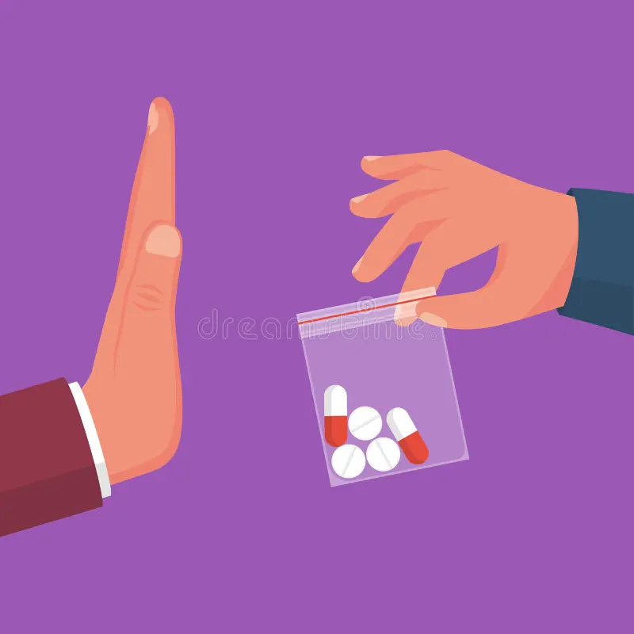

Concientización sobre el consumo y los riesgos de las drogas en jóvenes
¿Qué son las drogas?
Las drogas son sustancias psicoactivas que alteran el funcionamiento del sistema nervioso central, modificando el estado de ánimo, la percepción o la conciencia, y pueden ser estimulantes, depresoras o alucinógenas, afectando seriamente la salud física y mental. Se clasifican en diversas categorías como estimulantes (cocaína), depresores, ansiolíticos y alucinógenos (LSD, hongos), siendo muchas de ellas de uso recreativo ilegal, aunque existen también fármacos legales.
Definición y clasificacion de las drogas
- Eufóricas: Opio y sus derivados, así como cocaína.
- Fantásticas: Mezcalina, marihuana y beleño, entre otras.
- Embriagantes: Alcohol, éter, cloroformo y bencina.
- Hipnóticas: Barbitúricos y otros somníferos.
- Excitantes: Cafeína y tabaco, entre otras.
Clasificacion de las drogas legales e ilegales
- Benzodiacepinas y otros sedantes-hipnóticos.
- Alcohol.
- Tabaco.
- Cannabis.
- Estimulantes (cocaína, metanfetamina, anfetamina, metilfenidato...).
- Alucinógenos (Lsd).
- Fenciclidina.
- Opiáceos.
- Inhalantes.
- Ketamina.
Legales.
Ilegales.
Realidad del consumo. ¿Cómo afecta al cerebro y al cuerpo?
El abuso de drogas provoca efectos a corto y largo plazo en la salud. Las drogas no solo afectan al cuerpo, también pueden afectar a la salud mental de la persona, a sus relaciones laborales, familiares, de pareja, a su vida social y, por supuesto, a su economía.
El consumo prolongado y la cantidad de dosis también influyen en los efectos físicos y psicológicos que causan las drogas. Más allá de las consecuencias en uno mismo, también hay que considerar en caso de padres drogadictos las consecuencias en sus hijos.
Los efectos negativos de las drogas en el sistema nervioso son diversos. Sus principales víctimas son los neurotransmisores, las sustancias que permiten que nuestro sistema cerebral funcione correctamente como la endorfina, la serotonina y la dopamina.
El consumo de cocaína, por ejemplo, altera el córtex prefrontal, la zona que controla el comportamiento y la capacidad de decisión, hasta el punto de provocar convulsiones y sufrimientos comparables a los de la esquizofrenia paranoide. El efecto de las drogas sobre el sistema nervioso es muy insidioso, ya que ese breve placer inicial cuesta lapsos de memoria en el cerebro comparables a los de los ancianos, lo que conduce a la demencia temprana y al Alzheimer.
Consecuencia del consumo en adolescentes
Consecuencia física, psicológica y sociales
- Daños al sistema nervioso (pérdida de memoria, coordinación y reflejos).
- Problemas cardíacos y respiratorios (arritmias, infartos, dificultad para respirar).
- Daño al hígado y riñones (cirrosis, insuficiencia renal).
- Trastornos del sueño y del apetito.
- Adicción y pérdida de control sobre el consumo.
- Cambios bruscos de humor e irritabilidad.
- Alucinaciones, paranoia y psicosis (en drogas más fuertes).
- Aislamiento emocional y pérdida de motivación.
- Problemas familiares y ruptura de relaciones.
- Estigmatización y rechazo social.
- Dificultades económicas.
- Bajo rendimiento académico o abandono escolar.
Consecuencia física
Consecuencia psicologica
Consecuencia social
Testimonios y casos reales.
Manejo emocional.
Presión social
La presión social es la influencia que ejercen otras personas o el entorno para que alguien actúe de cierta manera. En el caso de las drogas, esta presión puede llevar a una persona a probar o consumir sustancias aunque no lo desee.
Autoestima social
La autoestima social y grupal se refiere a cómo una persona se valora a sí misma dentro de un grupo y cómo se siente aceptada por los demás.
- Las personas con baja autoestima pueden consumir drogas para sentirse aceptadas o valoradas.
- El miedo al rechazo del grupo puede llevar a consumir sustancias aunque no se quiera.
- En algunos grupos, el consumo de drogas se ve como una forma de pertenecer o “encajar”.
- Dependencia emocional del grupo.
- Pérdida de identidad personal.
- Mayor vulnerabilidad a la presión social.
Relación con las drogas:
Consecuencias:
Redes sociales
Las redes sociales influyen fuertemente en las decisiones y comportamientos, especialmente en jóvenes.
- Publicaciones que normalizan o idealizan el consumo de drogas.
- Influencers o figuras públicas que muestran el consumo como algo “cool”.
- Retos virales o contenido que minimiza los riesgos.
- Percepción errónea de que “todos consumen”.
- Curiosidad y presión indirecta para imitar conductas.
- Aumento del consumo por imitación.
Relación con las drogas:
Consecuencias:
Prevención y toma de decisiones
La prevención consiste en desarrollar habilidades que permitan tomar decisiones responsables, informadas y seguras frente al consumo de drogas. Tomar buenas decisiones ayuda a proteger la salud física, mental y social.
Estrategias para decir no
Se debe ser asertivo, proponer alternativas, repetir la postura o retirarse si es necesario.
Apoyo a los jóvenes
Algunas opciones reales de apoyo para jóvenes con problemas de drogas o que necesitan ayuda emocional, incluyendo líneas de contacto, fundaciones y opciones de especialistas pueden ser:
Metodología
Aqui un video educativos: